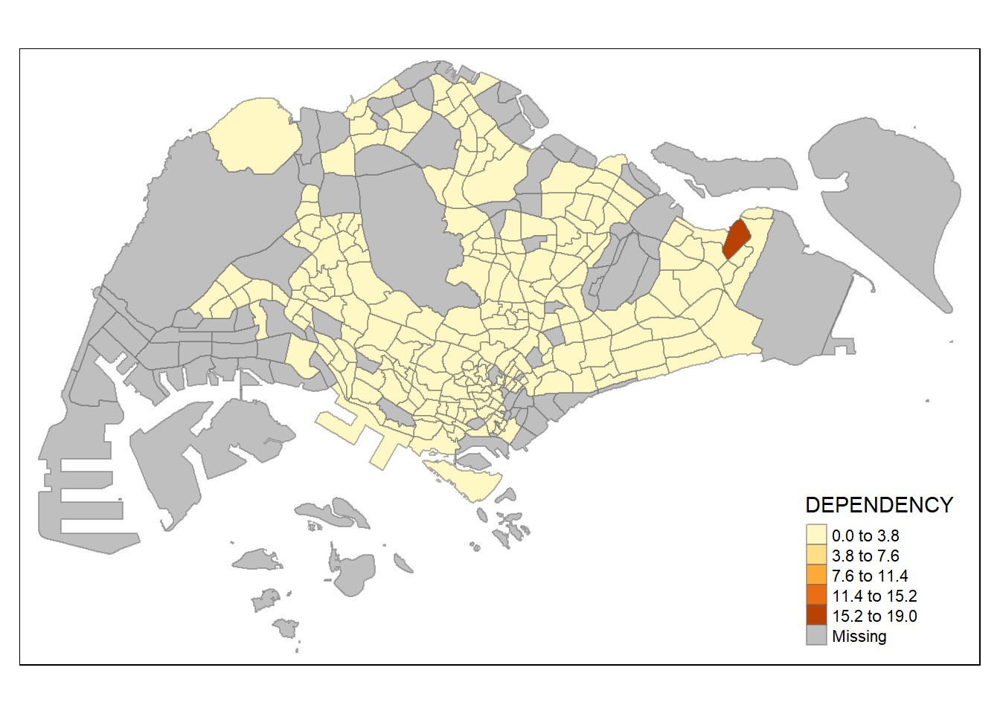

Reading layer `MP14_SUBZONE_WEB_PL' from data source
`C:\yixin-neo\ISSS624\Hands-on_Ex02\data\geospatial' using driver `ESRI Shapefile'
Simple feature collection with 323 features and 15 fields
Geometry type: MULTIPOLYGON
Dimension: XY
Bounding box: xmin: 2667.538 ymin: 15748.72 xmax: 56396.44 ymax: 50256.33
Projected CRS: SVY21
mpsz
Simple feature collection with 323 features and 15 fields
Geometry type: MULTIPOLYGON
Dimension: XY
Bounding box: xmin: 2667.538 ymin: 15748.72 xmax: 56396.44 ymax: 50256.33
Projected CRS: SVY21
First 10 features:
OBJECTID SUBZONE_NO SUBZONE_N SUBZONE_C CA_IND PLN_AREA_N
1 1 1 MARINA SOUTH MSSZ01 Y MARINA SOUTH
2 2 1 PEARL'S HILL OTSZ01 Y OUTRAM
3 3 3 BOAT QUAY SRSZ03 Y SINGAPORE RIVER
4 4 8 HENDERSON HILL BMSZ08 N BUKIT MERAH
5 5 3 REDHILL BMSZ03 N BUKIT MERAH
6 6 7 ALEXANDRA HILL BMSZ07 N BUKIT MERAH
7 7 9 BUKIT HO SWEE BMSZ09 N BUKIT MERAH
8 8 2 CLARKE QUAY SRSZ02 Y SINGAPORE RIVER
9 9 13 PASIR PANJANG 1 QTSZ13 N QUEENSTOWN
10 10 7 QUEENSWAY QTSZ07 N QUEENSTOWN
PLN_AREA_C REGION_N REGION_C INC_CRC FMEL_UPD_D X_ADDR
1 MS CENTRAL REGION CR 5ED7EB253F99252E 2014-12-05 31595.84
2 OT CENTRAL REGION CR 8C7149B9EB32EEFC 2014-12-05 28679.06
3 SR CENTRAL REGION CR C35FEFF02B13E0E5 2014-12-05 29654.96
4 BM CENTRAL REGION CR 3775D82C5DDBEFBD 2014-12-05 26782.83
5 BM CENTRAL REGION CR 85D9ABEF0A40678F 2014-12-05 26201.96
6 BM CENTRAL REGION CR 9D286521EF5E3B59 2014-12-05 25358.82
7 BM CENTRAL REGION CR 7839A8577144EFE2 2014-12-05 27680.06
8 SR CENTRAL REGION CR 48661DC0FBA09F7A 2014-12-05 29253.21
9 QT CENTRAL REGION CR 1F721290C421BFAB 2014-12-05 22077.34
10 QT CENTRAL REGION CR 3580D2AFFBEE914C 2014-12-05 24168.31
Y_ADDR SHAPE_Leng SHAPE_Area geometry
1 29220.19 5267.381 1630379.3 MULTIPOLYGON (((31495.56 30...
2 29782.05 3506.107 559816.2 MULTIPOLYGON (((29092.28 30...
3 29974.66 1740.926 160807.5 MULTIPOLYGON (((29932.33 29...
4 29933.77 3313.625 595428.9 MULTIPOLYGON (((27131.28 30...
5 30005.70 2825.594 387429.4 MULTIPOLYGON (((26451.03 30...
6 29991.38 4428.913 1030378.8 MULTIPOLYGON (((25899.7 297...
7 30230.86 3275.312 551732.0 MULTIPOLYGON (((27746.95 30...
8 30222.86 2208.619 290184.7 MULTIPOLYGON (((29351.26 29...
9 29893.78 6571.323 1084792.3 MULTIPOLYGON (((20996.49 30...
10 30104.18 3454.239 631644.3 MULTIPOLYGON (((24472.11 29...
Rows: 984656 Columns: 7
── Column specification ────────────────────────────────────────────────────────
Delimiter: ","
chr (5): PA, SZ, AG, Sex, TOD
dbl (2): Pop, Time
ℹ Use `spec()` to retrieve the full column specification for this data.
ℹ Specify the column types or set `show_col_types = FALSE` to quiet this message.
popdata %>%head()
# A tibble: 6 × 7
PA SZ AG Sex TOD Pop Time
<chr> <chr> <chr> <chr> <chr> <dbl> <dbl>
1 Ang Mo Kio Ang Mo Kio Town Centre 0_to_4 Males HDB 1- and 2-Room … 0 2011
2 Ang Mo Kio Ang Mo Kio Town Centre 0_to_4 Males HDB 3-Room Flats 10 2011
3 Ang Mo Kio Ang Mo Kio Town Centre 0_to_4 Males HDB 4-Room Flats 30 2011
4 Ang Mo Kio Ang Mo Kio Town Centre 0_to_4 Males HDB 5-Room and Exe… 50 2011
5 Ang Mo Kio Ang Mo Kio Town Centre 0_to_4 Males HUDC Flats (exclud… 0 2011
6 Ang Mo Kio Ang Mo Kio Town Centre 0_to_4 Males Landed Properties 0 2011
2.3.4 Data preparation
Prepare a data table with year 2020 values. The data table should include the variables PA, SZ, YOUNG, ECONOMY ACTIVE, AGED, TOTAL, DEPENDENCY.
YOUNG: age group 0 to 4 until age groyup 20 to 24,
ECONOMY ACTIVE: age group 25-29 until age group 60-64,
AGED: age group 65 and above,
TOTAL: all age group, and
DEPENDENCY: the ratio between young and aged against economy active group
2.3.4.1 Data Wrangling
pivot_wider() (rows to column headers) of tidyr package, and
mutate() (create new cal col), filter() (subset rows), group_by() and select() (select cols) of dplyr package
`summarise()` has grouped output by 'PA', 'SZ'. You can override using the
`.groups` argument.
popdata2020
# A tibble: 332 × 7
PA SZ YOUNG `ECONOMY ACTIVE` AGED TOTAL DEPEND…¹
<chr> <chr> <dbl> <dbl> <dbl> <dbl> <dbl>
1 Ang Mo Kio Ang Mo Kio Town Centre 1290 2760 760 4810 0.743
2 Ang Mo Kio Cheng San 5640 16460 6050 28150 0.710
3 Ang Mo Kio Chong Boon 5100 15000 6470 26570 0.771
4 Ang Mo Kio Kebun Bahru 4620 13010 5120 22750 0.749
5 Ang Mo Kio Sembawang Hills 1880 3630 1310 6820 0.879
6 Ang Mo Kio Shangri-La 3330 9050 3610 15990 0.767
7 Ang Mo Kio Tagore 1940 4480 1530 7950 0.775
8 Ang Mo Kio Townsville 4190 11950 5100 21240 0.777
9 Ang Mo Kio Yio Chu Kang 0 0 0 0 NaN
10 Ang Mo Kio Yio Chu Kang East 1110 2410 750 4270 0.772
# … with 322 more rows, and abbreviated variable name ¹DEPENDENCY
Refer to this link for difference between group_by() - mutate() and group_by() - summarise()
ungroup() usually done after performing calculation in group()
`summarise()` has grouped output by 'PA', 'SZ'. You can override using the
`.groups` argument.
popdata20201
# A tibble: 6,308 × 4
# Groups: PA, SZ [332]
PA SZ AG POP
<chr> <chr> <chr> <dbl>
1 Ang Mo Kio Ang Mo Kio Town Centre 0_to_4 170
2 Ang Mo Kio Ang Mo Kio Town Centre 10_to_14 280
3 Ang Mo Kio Ang Mo Kio Town Centre 15_to_19 340
4 Ang Mo Kio Ang Mo Kio Town Centre 20_to_24 270
5 Ang Mo Kio Ang Mo Kio Town Centre 25_to_29 260
6 Ang Mo Kio Ang Mo Kio Town Centre 30_to_34 310
7 Ang Mo Kio Ang Mo Kio Town Centre 35_to_39 330
8 Ang Mo Kio Ang Mo Kio Town Centre 40_to_44 400
9 Ang Mo Kio Ang Mo Kio Town Centre 45_to_49 480
10 Ang Mo Kio Ang Mo Kio Town Centre 5_to_9 230
# … with 6,298 more rows
2.3.4.2 Joining the attribute data and geospatial data
Convert PA and SZ fields in popdata2020 into all uppercase using:
Warning: `funs()` was deprecated in dplyr 0.8.0.
ℹ Please use a list of either functions or lambdas:
# Simple named list: list(mean = mean, median = median)
# Auto named with `tibble::lst()`: tibble::lst(mean, median)
# Using lambdas list(~ mean(., trim = .2), ~ median(., na.rm = TRUE))
Next, left_join() of dplyr is used to join the geographical data and attribute table using planning subzone name e.g. SUBZONE_N and SZ as the common identifier.
style: method to process the color scale when col (data variable) is a numeric variable. To process numeric and categorical use “cat”
palette : palettes names or vectors of colors. default is taken from tm_layout’s aes.paletttes argument. To reverse the colour scheme , add a “-” prefix.
tm_borders() <- draws the borders of polygons (alpha is 0-1, transparency)
tm_polygons() (= tm_fill() + tm_borders() )<- fills the polygon and draws the polygon borders
*qtm = shape + polygon or * qtm = shape + fill + border
tm_grid() <- creates grid lines (alpha is 0-1, transparency of grid lines)
tm_credits() <- create a text for credits
tm_shape(mpsz_pop2020)+tm_fill("DEPENDENCY", style ="quantile", palette ="Reds",title ="Dependency ratio") +tm_layout(main.title ="Distribution of Dependency Ratio by planning subzone",main.title.position ="center",main.title.size =1.2,legend.height =0.45, legend.width =0.35,frame =TRUE) +tm_borders(alpha =0.5) +tm_compass(type="8star", size =2) +tm_scale_bar() +tm_grid(alpha =0.2) +tm_credits("Source: Planning Sub-zone boundary from Urban Redevelopment Authorithy (URA)\n and Population data from Department of Statistics DOS", position =c("left", "bottom"))
2.4.2.1 Drawing a base map
tm_shape(mpsz_pop2020)+tm_polygons()
2.4.2.2 Drawing a choropleth map using tm_polygons()
tm_shape(mpsz_pop2020)+tm_polygons('DEPENDENCY')
Things to learn from tm_polygons():
The default interval binning used to draw the choropleth map is called “pretty”. A detailed discussion of the data classification methods supported by tmap will be provided in sub-section 4.3.
The default colour scheme used is YlOrRd of ColorBrewer. You will learn more about the color scheme in sub-section 4.4.
By default, Missing value will be shaded in grey.
2.4.2.3. Drawing a choropleth map using tm_fill() and tm_border()
Beside alpha argument, there are three other arguments for tm_borders(), they are:
col = border colour,
lwd = border line width. The default is 1, and
lty = border line type. The default is “solid”.
2.4.3 Data classification methods of tmap
The point of classification is to take a large number of observations and group them into data ranges or classes.
tmap provides a total ten data classification methods, namely: fixed, sd, equal, pretty (default), quantile, kmeans, hclust, bclust, fisher, and jenks.
To define a data classification method, the style argument of tm_fill() or tm_polygons() will be used.
Plotting choropleth maps with built-in classification methods
Quantile classification with 5 classes The Jenks method clusters data into groups that minimize the within-group variance and maximize the between-group variance.
tm_shape(mpsz_pop2020)+tm_fill("DEPENDENCY", n =5, style ='jenks') +tm_borders(alpha =0.5)
Equal data classification
tm_shape(mpsz_pop2020)+tm_fill("DEPENDENCY", n =5, style ='equal') +tm_borders(alpha =0.5)

Notice that the distribution of quantile data classification method are more evenly distributed then equal data classification method.
DIY: Using what you had learned, prepare choropleth maps by using different classification methods supported by tmap and compare their differences.
tm_shape(mpsz_pop2020)+tm_fill("DEPENDENCY", n =5, style ='kmeans') +tm_borders(alpha =0.5)
tm_shape(mpsz_pop2020)+tm_fill("DEPENDENCY", n =5, style ='sd') +tm_borders(alpha =0.5)
tm_shape(mpsz_pop2020)+tm_fill("DEPENDENCY", n =5, style ='fisher') +tm_borders(alpha =0.5)
DIY: Preparing choropleth maps by using similar classification method but with different numbers of classes (i.e. 2, 6, 10, 20). Compare the output maps, what observation can you draw?
tm_shape(mpsz_pop2020)+tm_fill("DEPENDENCY", n =3, style ='jenks') +tm_borders(alpha =0.5)
tm_shape(mpsz_pop2020)+tm_fill("DEPENDENCY", n =10, style ='jenks') +tm_borders(alpha =0.5)
2.4.3.2 Plotting choropleth maps with custome break
The breakpoints can be set explicitly by means of the breaks argument to the tm_fill().
breaks include min and max
to have n categories, n+1 elements to be specified in breaks option
values must be in increasing order
Good practise: descriptive statistics on variable before setting break points
summary(mpsz_pop2020$DEPENDENCY)
Min. 1st Qu. Median Mean 3rd Qu. Max. NA's
0.0000 0.6519 0.7025 0.7742 0.7645 19.0000 92
boxplot(mpsz_pop2020$DEPENDENCY, outline=FALSE)
With reference to summary stats and boxplot above,
break points are 0.6, 0.7, 0.8, 0.9
min = 0 and max = 1.0
break vector is thus c(0, 0.6, 0.7, 0.8, 0.9, 1.0)
other available styles are: "white", "gray", "cobalt", "col_blind", "albatross", "beaver", "bw", "classic", "watercolor"
2.4.5.3 Cartographic Furniture
Can include other map furniture like compass, scale bar, and grid lines
tmap_style has to be used at the last, think cannot mix with tm
tm_shape(mpsz_pop2020)+tm_fill("DEPENDENCY", style ="quantile", palette ="Reds",title ="No. of persons") +tm_layout(main.title ="Distribution of Dependency Ratio \nby planning subzone",main.title.position ="center",main.title.size =1.2,legend.height =0.45, legend.width =0.35,frame =TRUE) +tm_borders(alpha =0.5) +tm_compass(type="8star", size =2) +tm_scale_bar(width =0.15) +tm_grid(lwd =0.1, alpha =0.2) +tm_credits("Source: Planning Sub-zone boundary from Urban Redevelopment Authorithy (URA)\n and Population data from Department of Statistics DOS", position =c("left", "bottom")) +tmap_style('natural')
tmap style set to "natural"
other available styles are: "white", "gray", "cobalt", "col_blind", "albatross", "beaver", "bw", "classic", "watercolor"
To reset the default style, refer below
tmap_style("white")
tmap style set to "white"
other available styles are: "gray", "natural", "cobalt", "col_blind", "albatross", "beaver", "bw", "classic", "watercolor"
2.4.6 Drawing Small Multiple Choropleth Maps
Small multiple maps, also referred to as facet maps, are composed of many maps arrange side-by-side, and sometimes stacked vertically. Small multiple maps enable the visualisation of how spatial relationships change with respect to another variable, such as time.
In tmap, small multiple maps can be plotted in three ways:
by assigning multiple values to at least one of the asthetic arguments,
by defining a group-by variable in tm_facets(), and
by creating multiple stand-alone maps with tmap_arrange().
2.4.6.1 By assigning multiple values to at least one of the aesthetic arguments
define ncols in tm_fill() : c(‘YOUNG’, ‘AGED’ , ‘TOTAL’)
2.4.6.2 By defining a group-by variable in tm_facets()
In this example, multiple small choropleth maps are created by using tm_facets().
thres.poly: number that specifies the threshold at which polygons are taken into account. The number itself corresponds to the proportion of the area sizes of the polygons to the total polygon size. By default, all polygons are drawn.
Warning in pre_process_gt(x, interactive = interactive, orig_crs =
gm$shape.orig_crs): legend.width controls the width of the legend within a map.
Please use legend.outside.size to control the width of the outside legend
2.4.8. Tmap summary
From chap 2, using tmap package to plot
1. tm_shape+ tm_polygon
2. tm_shape+ tm_fill + tm_borders _ tm_layout
3. qtm
Chap 2: To plot small multiple chloroplath maps via qtm or tmap elements:
1. Add multiple values to tm_polygon or tm_fill
2. Tm_facets
3. Tm_arrange
Chap 3: To plot small multiple layered chloroplath maps via plot() method:
4. To arrange the maps via plot(),
par(mfrow=c(2,2)) <- 2x2 layout
From chap 3: to add layers to a plot
1. just keep repeating plot(weight matrix ,coords,add=TRUE)